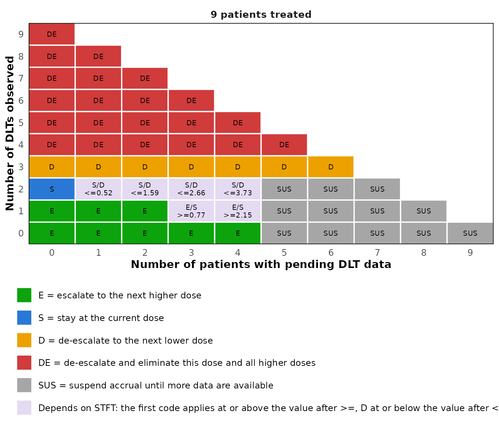

Late-onset toxicity with the TITE-BOIN design
Source:vignettes/simFastBOIN-tite.Rmd
simFastBOIN-tite.RmdWhy a time-to-event design
The BOIN design needs every patient’s outcome before the next cohort
is dosed. When toxicity can appear late in a long assessment window, or
patients arrive faster than they can be assessed, that means repeatedly
suspending accrual. The time-to-event BOIN (TITE-BOIN) design treats new
patients while earlier ones are still being followed, and uses the
follow-up time of these pending patients. Two ways of doing so are
available through method: the single mean imputation of
Yuan et al. (2018), the default, and the effective sample size of Lin
and Yuan (2020).
The decision table
The decision table now depends on three counts, the patients treated, the DLTs observed and the patients pending, and in some states on the standardized total follow-up time (STFT) of the pending patients, their total follow-up divided by the length of the window. The table for a target of 0.2 is Table 1 of Yuan et al. (2018), which the package reproduces entry by entry.
tite <- tite_boin_decision_table(target = 0.2, max_n = 15)
print(tite, cohort_size = 3)
#> TITE-BOIN decision table with target 0.2
#> Method: single mean imputation (Yuan et al., 2018); boundaries refer to STFT
#>
#> Patients DLTs Pending Escalate Stay De-escalate
#> 3 0 <= 1 Y
#> 3 0 >= 2 Suspend Suspend Suspend
#> 3 1 <= 2 Y
#> 3 >= 2 <= 1 Y & Elim
#> 6 0 <= 3 Y
#> 6 0 >= 4 Suspend Suspend Suspend
#> 6 1 <= 3 Y
#> 6 1 >= 4 Suspend Suspend Suspend
#> 6 2 <= 4 Y
#> 6 >= 3 <= 3 Y & Elim
#> 9 0 <= 4 Y
#> 9 0 >= 5 Suspend Suspend Suspend
#> 9 1 <= 2 Y
#> 9 1 3 >= 0.77 < 0.77
#> 9 1 4 >= 2.15 < 2.15
#> 9 1 >= 5 Suspend Suspend Suspend
#> 9 2 0 Y
#> 9 2 1 > 0.52 <= 0.52
#> 9 2 2 > 1.59 <= 1.59
#> 9 2 3 > 2.66 <= 2.66
#> 9 2 4 > 3.73 <= 3.73
#> 9 2 >= 5 Suspend Suspend Suspend
#> 9 3 <= 6 Y
#> 9 >= 4 <= 5 Y & Elim
#> 12 0 <= 6 Y
#> 12 0 >= 7 Suspend Suspend Suspend
#> 12 1 <= 5 Y
#> 12 1 6 >= 1.24 < 1.24
#> 12 1 >= 7 Suspend Suspend Suspend
#> 12 2 <= 6 Y
#> 12 2 >= 7 Suspend Suspend Suspend
#> 12 3, 4 <= 9 Y
#> 12 >= 5 <= 7 Y & Elim
#> 15 0 <= 7 Y
#> 15 0 >= 8 Suspend Suspend Suspend
#> 15 1 <= 7 Y
#> 15 1 >= 8 Suspend Suspend Suspend
#> 15 2 <= 2 Y
#> 15 2 3 >= 1.14 < 1.14
#> 15 2 4 >= 2.31 < 2.31
#> 15 2 5 >= 3.48 < 3.48
#> 15 2 6 >= 4.65 < 4.65
#> 15 2 7 >= 5.82 < 5.82
#> 15 2 >= 8 Suspend Suspend Suspend
#> 15 3 <= 2 Y
#> 15 3 3 > 1.16 <= 1.16
#> 15 3 4 > 2.34 <= 2.34
#> 15 3 5 > 3.53 <= 3.53
#> 15 3 6 > 4.72 <= 4.72
#> 15 3 7 > 5.90 <= 5.90
#> 15 3 >= 8 Suspend Suspend Suspend
#> 15 4, 5 <= 11 Y
#> 15 >= 6 <= 9 Y & Elim
#>
#> Patients = treated at the current dose, DLTs = DLTs observed, Pending = assessment not yet completed
#> STFT = total follow-up time of the pending patients divided by the length of the assessment window
#> Accrual is suspended when more than 50% of the patients are pending
#> Y & Elim = de-escalate and eliminate this dose and all higher dosesThe table is a data frame, so a single state can be looked up. With nine patients, one DLT and four pending, the dose is escalated once STFT reaches 2.15. In the trial example of Yuan et al. (2018) the four pending patients had been followed for 75, 60, 45 and 30 days of a 90 day window, an STFT of 2.33, and the dose was escalated.
tite[tite$n == 9 & tite$n_tox == 1 & tite$n_pending == 4, ]
#> TITE-BOIN decision table with target 0.2
#> Method: single mean imputation (Yuan et al., 2018); boundaries refer to STFT
#>
#> Patients DLTs Pending Escalate Stay De-escalate
#> 9 1 4 >= 2.15 < 2.15
#>
#> Patients = treated at the current dose, DLTs = DLTs observed, Pending = assessment not yet completed
#> STFT = total follow-up time of the pending patients divided by the length of the assessment window
#> Accrual is suspended when more than 50% of the patients are pending
#> Y & Elim = de-escalate and eliminate this dose and all higher dosesThe same table as a figure, here for nine patients. Each cell is a
pair of pending patients and DLTs; a cell whose decision depends on the
follow-up shows the boundaries, the one after >= for
escalation and the one after <= for de-escalation.
plot(tite, n = 9)
Under the effective sample size the boundaries refer to ESS, the number of patients who have completed the assessment plus STFT, and escalation waits until two patients at the dose have completed it.
print(tite_boin_decision_table(target = 0.3, max_n = 9, method = "ess"),
cohort_size = 3)
#> TITE-BOIN decision table with target 0.3
#> Method: effective sample size (Lin and Yuan, 2020); boundaries refer to ESS
#>
#> Patients DLTs Pending Escalate Stay De-escalate
#> 3 0 <= 1 Y
#> 3 0 >= 2 Suspend Suspend Suspend
#> 3 1 0 Y
#> 3 1 >= 1 > 2.79 <= 2.79
#> 3 2 <= 1 Y
#> 3 3 0 Y & Elim
#> 6 0 <= 4 Y
#> 6 0 >= 5 Suspend Suspend Suspend
#> 6 1 <= 1 Y
#> 6 1 2-3 >= 4.23 < 4.23
#> 6 1 4 >= 4.23 > 2.79, < 4.23 <= 2.79
#> 6 1 >= 5 Suspend if >= 4.23 > 2.79, < 4.23 <= 2.79
#> 6 2 0 Y
#> 6 2 >= 1 > 5.58 <= 5.58
#> 6 3 <= 3 Y
#> 6 >= 4 <= 2 Y & Elim
#> 9 0 <= 7 Y
#> 9 0 >= 8 Suspend Suspend Suspend
#> 9 1 <= 4 Y
#> 9 1 5-6 >= 4.23 < 4.23
#> 9 1 7 >= 4.23 > 2.79, < 4.23 <= 2.79
#> 9 1 >= 8 Suspend if >= 4.23 > 2.79, < 4.23 <= 2.79
#> 9 2 0 Y
#> 9 2 1-3 >= 8.46 < 8.46
#> 9 2 >= 4 >= 8.46 > 5.58, < 8.46 <= 5.58
#> 9 3 0 Y
#> 9 3 >= 1 > 8.37 <= 8.37
#> 9 4 <= 5 Y
#> 9 >= 5 <= 4 Y & Elim
#>
#> Patients = treated at the current dose, DLTs = DLTs observed, Pending = assessment not yet completed
#> STFT = total follow-up time of the pending patients divided by the length of the assessment window
#> ESS = number of patients with a completed assessment plus STFT
#> While patients are pending, escalation requires at least 2 patients with a completed assessment
#> Y & Elim = de-escalate and eliminate this dose and all higher dosesOperating characteristics
sim_tite_boin() simulates the design with patients
arriving over time. It needs the length of the assessment window and the
accrual rate, in the same unit of time, and reports the trial duration
and the suspensions of accrual in addition to the summaries of
sim_boin().
oc_tite <- sim_tite_boin(
target = 0.30,
p_true = c(0.05, 0.15, 0.30, 0.45, 0.60),
n_cohort = 10,
cohort_size = 3,
window = 3,
accrual_rate = 2,
n_trials = 2000,
seed = 123
)
oc_tite
#> TITE-BOIN operating characteristics
#> method : single mean imputation (Yuan et al., 2018)
#> target DLT rate : 0.3
#> trials : 2000
#> cohorts : 10 of size 3
#> max sample size : 30
#> lambda_e / _d : 0.2365 / 0.3585
#> window : 3
#> accrual : 2 patients per unit of time (exponential)
#>
#> DL1 DL2 DL3 DL4 DL5 Total / No MTD
#> True DLT rate (%) 5.0 15.0 30.0 45.0 60.0
#> MTD selected (%) 1.4 28.2 53.3 16.2 0.9 0.0
#> Patients treated 5.6 10.3 9.5 3.4 0.5 29.3
#> Patients with DLT 0.3 1.6 2.9 1.5 0.3 6.6
#>
#> Doses above a true DLT rate of 0.3: DL4, DL5
#> Patients treated there : 13.4%
#> Trials treating any patient there : 43.1%
#> Trials treating over 60% there : 2.8%
#> Trials treating over 80% there : 0%
#> Trials selecting an MTD there : 17.1%
#>
#> Trial duration and suspension of accrual
#> Average trial duration : 23.6
#> Trials with accrual suspended : 100%
#> Average number of suspensions : 4
#> Average time suspended : 6.6Faster accrual shortens the trial, at the price of more frequent suspensions.
by_rate <- sapply(c(0.5, 1, 2, 4), function(rate) {
oc <- sim_tite_boin(target = 0.30, p_true = c(0.05, 0.15, 0.30, 0.45, 0.60),
n_cohort = 10, cohort_size = 3, window = 3,
accrual_rate = rate, n_trials = 1000, seed = 1)
c(accrual_rate = rate, selected_dose_3 = oc$sel_percent[["DL3"]],
duration = oc$duration_mean, suspensions = oc$avg_n_suspensions)
})
round(t(by_rate), 2)
#> accrual_rate selected_dose_3 duration suspensions
#> [1,] 0.5 52.2 61.02 1.35
#> [2,] 1.0 56.2 34.88 2.72
#> [3,] 2.0 53.8 23.62 4.01
#> [4,] 4.0 53.1 19.23 5.01Agreement with the BOIN design
When no patient is ever pending at a decision, the time-to-event
design is the BOIN design, and the simulation engine reproduces
sim_boin() exactly. With arrivals one unit of time apart
and a window of half a unit, every patient has completed the assessment
before the next one arrives.
no_pending <- sim_tite_boin(target = 0.30,
p_true = c(0.05, 0.15, 0.30, 0.45, 0.60),
n_cohort = 10, cohort_size = 3, window = 0.5,
accrual_rate = 1, accrual = "fixed",
n_trials = 1000, seed = 7)
plain_boin <- sim_boin(target = 0.30, p_true = c(0.05, 0.15, 0.30, 0.45, 0.60),
n_cohort = 10, cohort_size = 3, n_trials = 1000,
seed = 7)
identical(no_pending$sel_percent, plain_boin$sel_percent)
#> [1] TRUE
identical(no_pending$n_pts_dose, plain_boin$n_pts_dose)
#> [1] TRUEReferences
Liu S. and Yuan, Y. (2015). Bayesian Optimal Interval Designs for Phase I Clinical Trials. Journal of the Royal Statistical Society: Series C, 64, 507-523.
Yuan, Y., Lin, R., Li, D., Nie, L. and Warren, K. E. (2018). Time-to-Event Bayesian Optimal Interval Design to Accelerate Phase I Trials. Clinical Cancer Research, 24(20), 4921-4930.
Lin, R. and Yuan, Y. (2020). Time-to-Event Model-Assisted Designs for Dose-Finding Trials with Delayed Toxicity. Biostatistics, 21(4), 807-824.